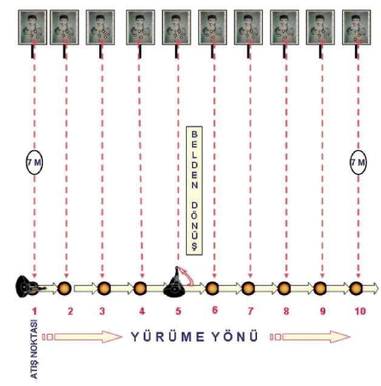
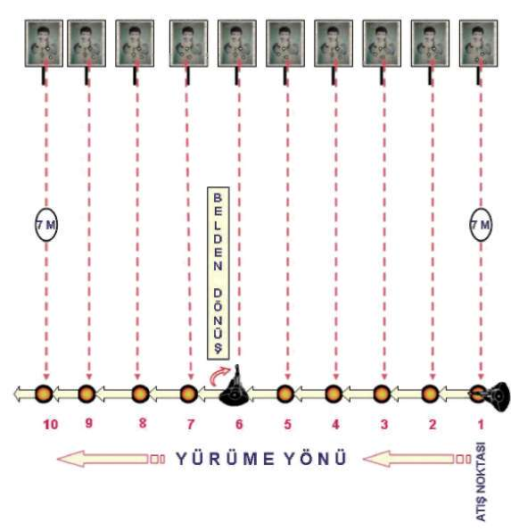
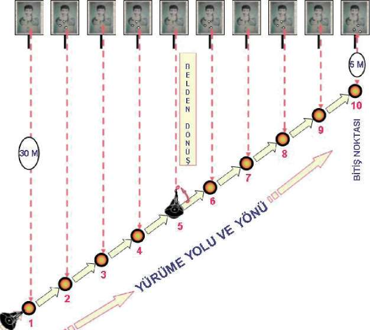
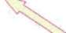
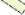
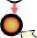
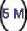

^ MP5 makinalı tabanca ile hareket hâlinde hedefe atış yapmayı,
^ MP5 makinalı tabanca ile hedefe yaklaşırken hedefi baskı altında tutmayı veya etkisiz hâle getirmeyi,
^ MP5 makinalı tabanca ile hedefinizden geri çekilirken onu baskı altında tutmayı veya etkisiz hâle getirmeyi,
^ Sıcak temas hâlindeki kişinin hareket hâlinde isabet alma ihtimali, sabit pozisyondan daha düşük olduğundan, sağa, sola, paralel veya teğet (çapraz) yönlere hareket ederek, hedefleri etkisiz hâle getirmeyi sağlar
^ Ayrıca bu tekniğin geniş alanları daraltarak, kontrolü sağlamada etkili olduğu gözlenmiştir
Şekil-15.a) İleri-Geri Yürürken Önden Çıkan Hedeflere Hareket Hâlinde Atış İstasyonu 136


BÖLÜM
İLERİ SEVİYE ATIŞ TEKNİKLERİ
Şekil-15.b) Hedeflere Paralel Yürürken Sağdan Çıkan Hedeflere Hareket Hâlinde Atış
İstasyonu
Şekil-15.c) Hedeflere Paralel Yürürken Soldan Çıkan Hedeflere Hareket 137






ffiiiiiiiŞ